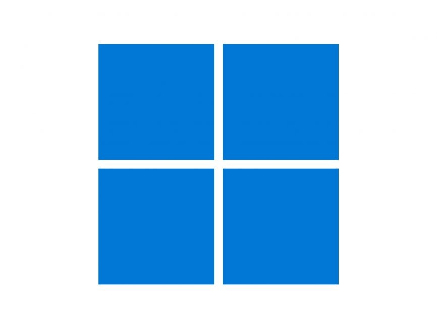
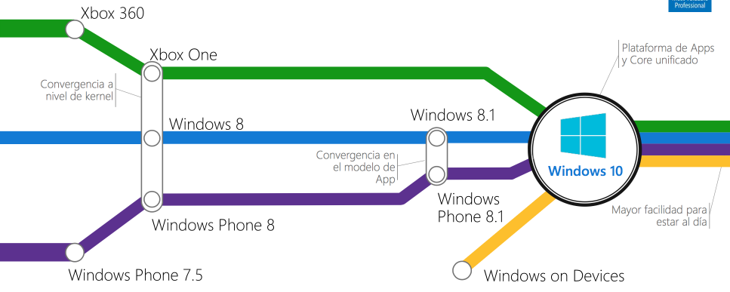

¿Qué es Windows 11?

Windows 11 es la última versión del sistema operativo desarrollado por Microsoft, lanzado en 2021 como sucesor de Windows 10. Ofrece una serie de nuevas características y mejoras en comparación con versiones anteriores.

Características principales
- Nuevo diseño: Windows 11 presenta un diseño moderno y simplificado, con esquinas redondeadas y una barra de tareas centrada.
- Menor consumo de recursos: Se han realizado optimizaciones para mejorar el rendimiento y reducir el consumo de recursos del sistema.
- Compatibilidad con aplicaciones de Android: Windows 11 ofrece soporte para ejecutar aplicaciones de Android a través de la Microsoft Store.
- Mejoras en la productividad: Se han introducido nuevas funciones para mejorar la productividad, como escritorios virtuales mejorados y una experiencia de juego mejorada.
Requisitos del sistema
Para ejecutar Windows 11, se requieren ciertos requisitos del sistema, que incluyen:
- Procesador de 64 bits con al menos 1 GHz de velocidad de reloj.
- 4 GB de RAM o más.
- Al menos 64 GB de almacenamiento disponible.
- Tarjeta gráfica compatible con DirectX 12 o posterior.
- Pantalla con resolución de al menos 720p.
- TPM (Módulo de plataforma segura) versión 2.0.
- UEFI compatible con Secure Boot.
- Conexión a internet y cuenta de Microsoft para algunas características.
Interfaz de Usuario
La interfaz de usuario de Windows 11 ha sido completamente rediseñada para ofrecer una experiencia más moderna y fluida. Las esquinas redondeadas, la barra de tareas centrada y el nuevo menú de inicio son algunas de las características más destacadas de su nuevo aspecto.
Evolución de Windows

Windows ha experimentado una evolución significativa a lo largo de los años, desde sus primeras versiones hasta llegar a Windows 11. Cada versión ha introducido nuevas características, mejoras de rendimiento y cambios en la interfaz de usuario para adaptarse a las necesidades cambiantes de los usuarios y las tecnologías emergentes.
Cuenta de Microsoft
Una cuenta de Microsoft es necesaria para acceder a muchas de las características y servicios ofrecidos por Windows 11. Esta cuenta permite la sincronización de datos entre dispositivos, acceso a la tienda de aplicaciones de Microsoft y la activación de funciones como el inicio de sesión único y la autenticación multifactor.
Hyper-V
Hyper-V es una característica de Windows 11 que permite la virtualización de sistemas operativos. Con Hyper-V, los usuarios pueden crear y ejecutar máquinas virtuales en sus dispositivos Windows 11, lo que les permite probar software, configuraciones de red y realizar otras tareas de virtualización sin necesidad de hardware adicional.
Conclusiones
Windows 11 representa una evolución significativa en el ecosistema de sistemas operativos de Microsoft. Con su diseño moderno, mejoras de rendimiento y nuevas características, ofrece una experiencia mejorada para los usuarios.
¡Gracias!